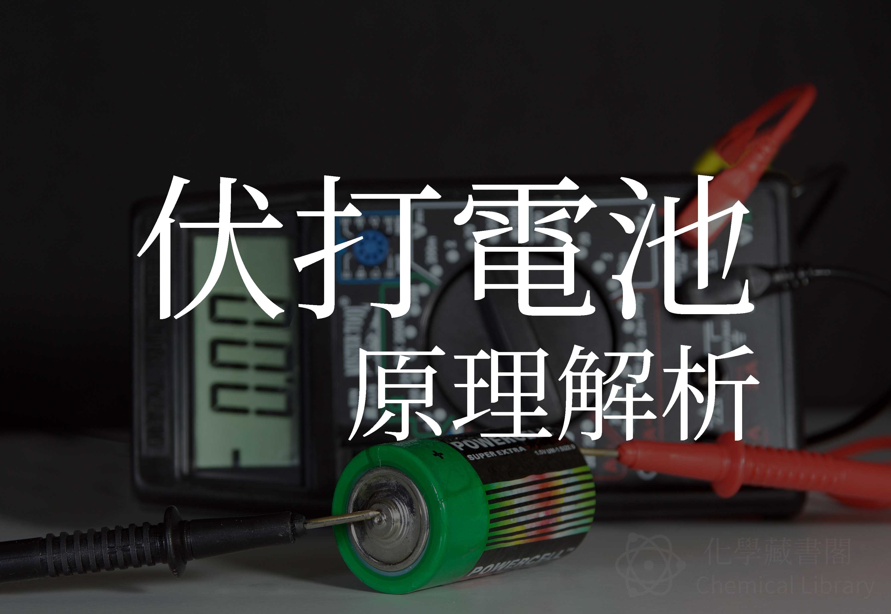

伏打電池堆原理解析
2017年5月1日

各位應該看過一種實驗，用兩片金屬就能有微弱的電力。其實那兩塊金屬，一個是銅片，另一個是鋅片，中間夾著沾有鹽水的濕布。
原理解析
伏打電池堆是伽凡尼電池的延伸版本(?，兩塊金屬中間的溶液是電解質，當把這兩個金屬中間放電解質溶液時，其中一個金屬會放出電子，另一個金屬吸收電子，中間透過導線連接，就會產生電流。
反應式：
Cu2+ + Zn ⇋ Cu + Zn2+
+0.34V-(-0.76V) = 1.10V
金屬腐蝕
當兩種金屬使用此方式連結，並同時與電解質接觸時，會形成伽凡尼電池，因電化學作用造成的金屬腐蝕現象。
有趣應用
電池 DIY : 檸檬電池
材料：檸檬 、 鍍鋅鐵釘 、 銅板
YouTube 示範影片：https://www.youtube.com/watch?v=AY9qcDCFeVI
我們可以用含銅的硬幣，加上鐵釘去做出檸檬電池，其中銅板是正極，而鐵釘因為表面通常會 鍍鋅以防止生鏽，再加上檸檬含的電解質，所以就可以組合成標準的「銅-鋅、伽凡尼」電池。
「銅-鋅反應」釋放的電壓大約是 1.1V，而點亮一顆 LED 需要 3V 以上的電壓，所以必須要用三顆以上的檸檬電池 串連，就可以點亮 LED 燈了。